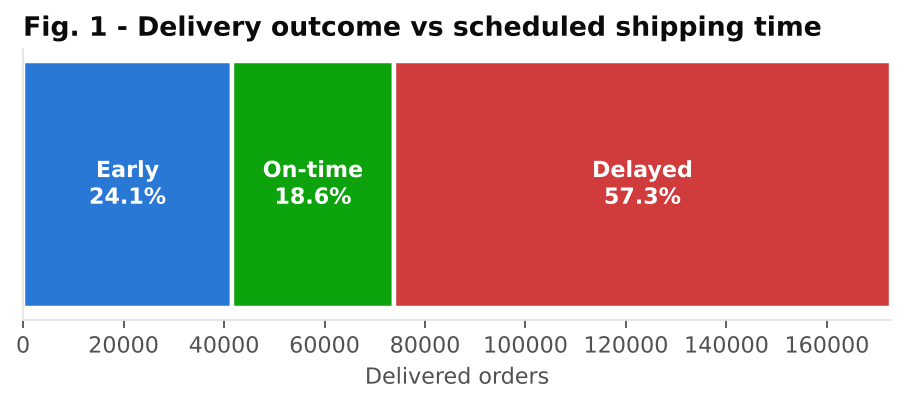
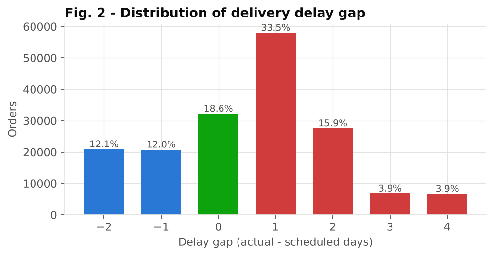
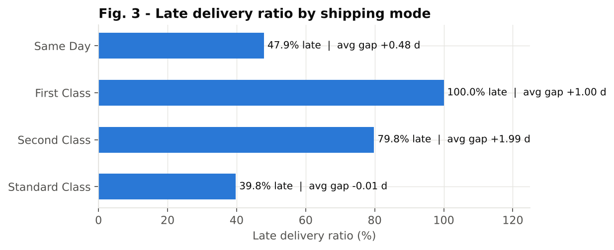
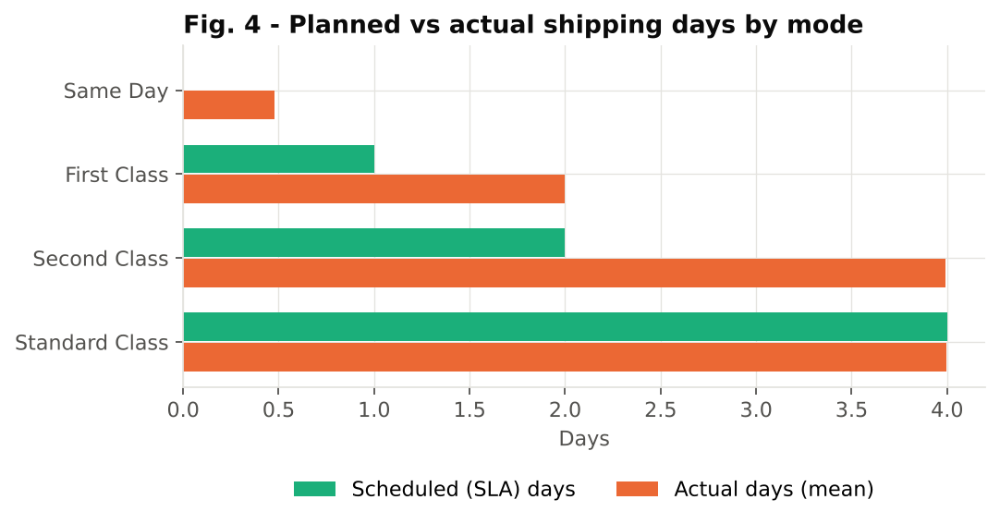
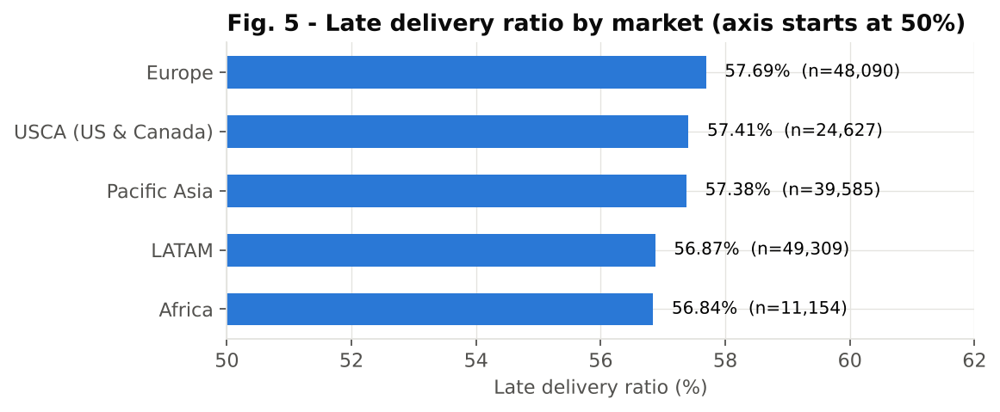
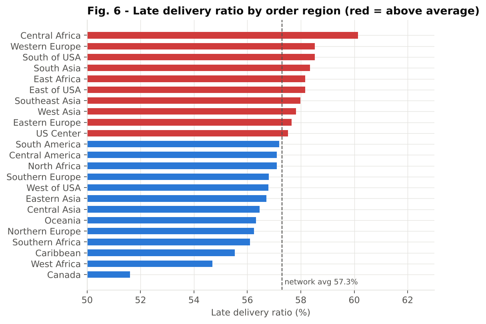
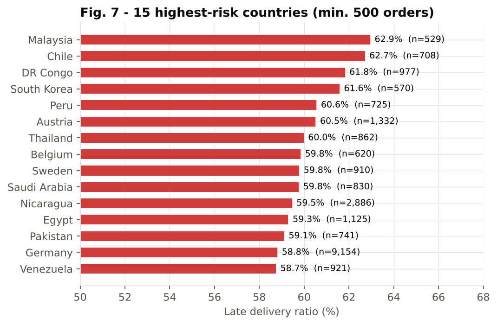
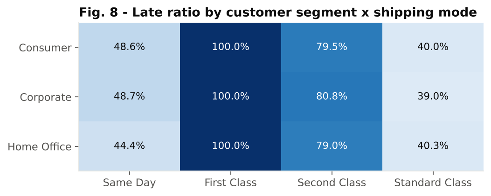
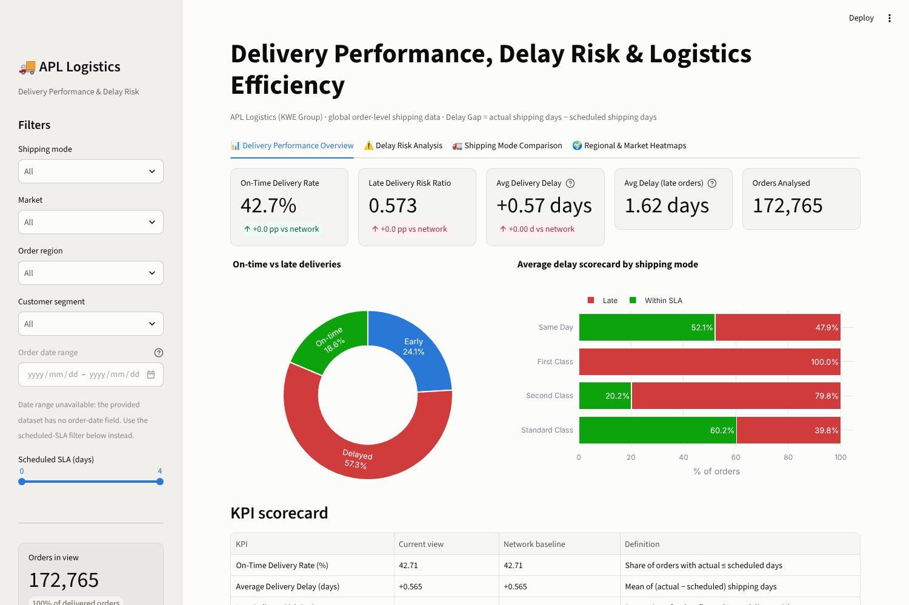
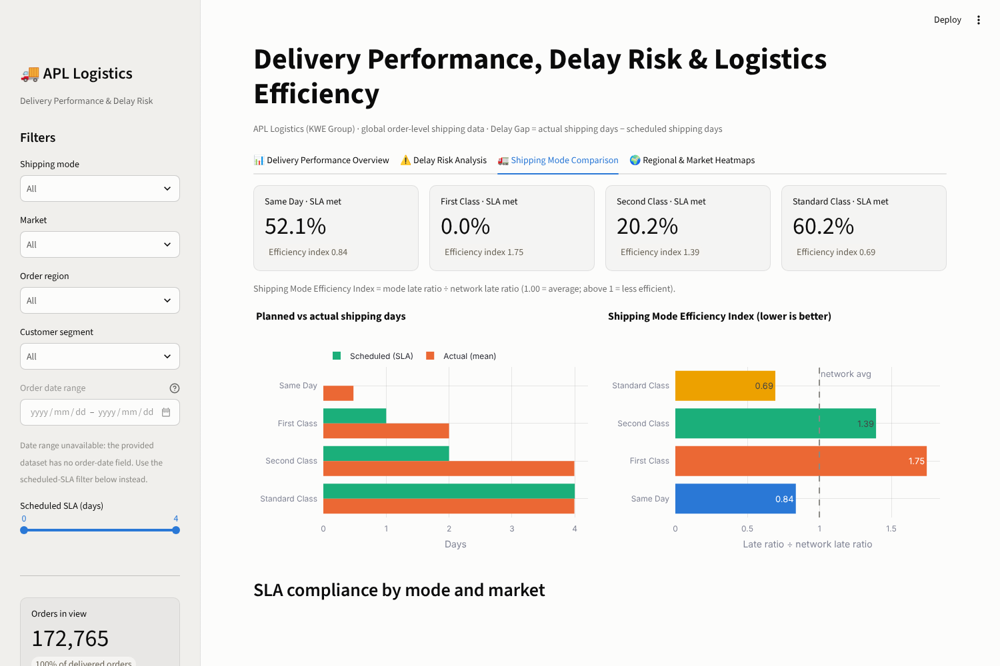

Late_delivery_risk, and locate
high-risk shipping modes, geographies and customer segments. After cleaning (7,754 cancelled shipments removed), we
compute a Delay Gap (actual minus scheduled shipping days) for 172,765 delivered orders. Only
42.7% of orders arrive within the scheduled time; the mean delay gap is +0.57 days and a late order
arrives on average 1.62 days behind schedule. The dominant driver is the shipping mode itself
(Cramér's V = 0.48): every First Class order is late because it takes 2 days against a 1-day promise,
and Second Class misses its 2-day promise 79.8% of the time because its actual transit-time distribution is
identical to Standard Class. Market, customer segment, product department and payment type have practically no
effect (V ≤ 0.007). Region and country differences are statistically detectable but small (51.6%–60.1% late
across regions). We show that realigning service promises with true transit capability, or fixing the premium-lane
execution, would lift on-time performance from 42.7% to between 58% and 74%. An interactive Streamlit dashboard
accompanies the paper.
In large-scale global logistics, delivery timeliness is the most visible measure of service quality. Delays lead directly to service-level agreement (SLA) violations and penalties; a mismatch between planned and actual shipping time raises cost through expediting and customer-service effort; and poorly matched shipping modes erode customer satisfaction. Because regional bottlenecks are often recognised only after complaints accumulate, operations teams tend to work reactively.
APL Logistics, part of the KWE Group, handles high-volume, multi-region shipments, which makes continuous delivery
performance monitoring essential. The organisation holds detailed order and shipping data but lacks (i) a clear
measurement of on-time versus delayed deliveries, (ii) an understanding of why shipments are delayed, (iii) visibility
into high-risk regions, markets and shipping modes, and (iv) diagnostics explaining the Late_delivery_risk
flag. This study builds that diagnostic layer and answers five questions:
The dataset contains 180,519 order-item records and 40 fields covering payment type, scheduled and actual
shipping days, delivery status, the binary Late_delivery_risk flag, product category and department,
customer attributes (segment, city, state, country), order geography (city, state, country, region, market), pricing,
discount, sales and profit, order status and shipping mode. Four shipping modes (Standard, Second, First Class and
Same Day), five markets, 23 order regions and 164 order countries are represented. Two fields contained minor
missing values (8 customer last names and 3 zip codes), neither of which is used in the analysis. The supplied extract
carries no order-date field, so time-trend analysis is out of scope; the dashboard's date-range selector
activates automatically if a dated extract is supplied.
Late_delivery_risk against Delivery Status: the flag equals 1 exactly when status is
“Late delivery” (0 conflicts).The analytical base is therefore 172,765 delivered orders.
For each order, Delay Gap = Days for shipping (real) − Days for shipment (scheduled). Orders are
classified as Early (gap < 0), On-time (gap = 0) or Delayed (gap > 0). In the cleaned data
this classification matches the source Delivery Status exactly (Advance shipping / Shipping on time /
Late delivery).
| KPI | Definition used |
|---|---|
| On-Time Delivery Rate (%) | Share of orders with Delay Gap ≤ 0 (delivered within scheduled time) |
| Average Delivery Delay (days) | Mean Delay Gap (actual − scheduled) |
| Late Delivery Risk Ratio | Mean of Late_delivery_risk (proportion of delayed shipments) |
| Shipping Mode Efficiency Index | Mode late ratio ÷ network late ratio (1.00 = average; > 1 = worse) |
| Regional Delay Index | Region/market/country late ratio ÷ network late ratio |
To separate real effects from noise, each dimension was tested against lateness with a chi-square test of independence, and effect size is reported as Cramér's V (0 = no association, 1 = perfect association). Country-level rankings use a minimum of 500 orders.
Of the 172,765 delivered orders, 42.7% arrived within the scheduled time: 24.1% early and 18.6% exactly on schedule. The remaining 57.3% were late (98,977 orders). The mean Delay Gap across all orders is +0.57 days; among late orders it is +1.62 days. Late orders account for $20.1M of $35.2M (57.2%) in sales, so SLA exposure is proportional to volume rather than concentrated in low-value orders. Average profit per order differs little between delayed ($21.62), on-time ($22.71) and early ($22.49) orders, which suggests the cost of lateness is not yet visible in recorded margin. It surfaces instead as penalty and customer-retention risk.

| Delay Gap (days) | −2 | −1 | 0 | +1 | +2 | +3 | +4 |
|---|---|---|---|---|---|---|---|
| Orders | 20,873 | 20,719 | 32,196 | 57,957 | 27,551 | 6,772 | 6,697 |
| Share | 12.1% | 12.0% | 18.6% | 33.5% | 15.9% | 3.9% | 3.9% |
The single most common outcome is a one-day overrun (33.5% of all orders). Severe delays of 3–4 days make up 7.8%. As Section 4.2 shows, all of them come from Second Class and Standard Class shipments.

| Shipping mode | Orders | Scheduled days | Mean actual days | Avg gap | Late ratio | Efficiency index |
|---|---|---|---|---|---|---|
| First Class | 26,513 | 1 | 2.00 | +1.00 | 100.0% | 1.75 |
| Second Class | 33,806 | 2 | 3.99 | +1.99 | 79.8% | 1.39 |
| Same Day | 9,293 | 0 | 0.48 | +0.48 | 47.9% | 0.84 |
| Standard Class | 103,153 | 4 | 3.99 | −0.01 | 39.8% | 0.69 |
Shipping mode is by far the strongest driver of delay (χ² = 40,059, p < 0.001, Cramér's V = 0.48). Three patterns stand out:
The premium modes (First and Second Class) carry 35% of orders but generate 54.1% of all late deliveries.


Markets. The five markets are almost indistinguishable: late ratios range from 56.8% (Africa) to 57.7% (Europe). This spread is not statistically significant (χ² = 7.8, p = 0.10, V = 0.007). Each market also uses nearly the same shipping-mode mix (about 59–61% Standard, 15–16% First Class), and within each mode the market late ratios are essentially identical (First Class 100% everywhere; Standard 39.6–40.0%).

Regions. Differences across the 23 order regions are statistically significant but small (χ² = 76.6, p < 0.001, V = 0.021). Central Africa has the highest late ratio (60.1%, n = 1,616, index 1.05), followed by Western Europe (58.5%, n = 25,867), which matters most because of its volume, then South of USA (58.5%) and South Asia (58.4%). Canada performs best (51.6%, n = 907), followed by West Africa (54.7%) and the Caribbean (55.5%).

Countries. Among the 50 countries with at least 500 orders, the highest-risk are Malaysia (63.0%), Chile (62.7%), DR Congo (61.8%), South Korea (61.6%), Peru (60.6%) and Austria (60.5%). Germany (58.8%, 9,154 orders) is the largest high-risk country by volume. Lowest-risk countries include Canada (51.6%), Panama (52.3%), Iraq (53.1%) and Japan (53.4%). For a country with about 500 orders the 95% confidence interval is roughly ±4 percentage points. Country rankings should therefore be read as a watch-list for investigation, not as confirmed bottlenecks.

| Segment | Orders | Late ratio | Avg gap | Late-order sales (SLA exposure) |
|---|---|---|---|---|
| Home Office | 30,817 | 57.6% | +0.58 | $3.58M |
| Consumer | 89,420 | 57.3% | +0.57 | $10.45M |
| Corporate | 52,528 | 57.1% | +0.56 | $6.10M |
Delays are distributed evenly across segments, and Corporate (enterprise) customers are delayed exactly as often as consumers. All segments use the same mode mix (about 15–16% First Class), so every segment buying First Class receives a guaranteed SLA breach. In absolute terms, Corporate accounts carry $6.1M of sales on late orders. That is the most contract-sensitive exposure, because enterprise SLAs usually carry financial penalties.

| Dimension | χ² | d.f. | p-value | Cramér's V | Interpretation |
|---|---|---|---|---|---|
| Shipping mode | 40,058.7 | 3 | < 0.001 | 0.482 | Strong driver |
| Order country | 573.6 | 163 | < 0.001 | 0.058 | Weak |
| Order region | 76.6 | 22 | < 0.001 | 0.021 | Very weak |
| Market | 7.8 | 4 | 0.099 | 0.007 | None |
| Department | 6.9 | 10 | 0.738 | 0.006 | None |
| Payment type | 5.2 | 3 | 0.158 | 0.005 | None |
| Customer segment | 2.1 | 2 | 0.350 | 0.003 | None |
The central finding is that APL's lateness problem is mainly a service-design problem, not a geographic
one. The Late_delivery_risk flag is almost fully explained by the gap between what each shipping
mode promises and what the network actually delivers. Transit times for Second and Standard Class follow the same
2–6 day pattern, which indicates that both modes probably move through the same physical lanes and that the
“Second Class” label is not linked to any faster handling. First Class is processed on a consistent
2-day cycle, so its 1-day promise can never be met. Because the late rate is about 57% in every market and segment,
fixes aimed at specific regions or customers would leave most of the problem untouched.
The regional and country variation that does exist (about 9 percentage points between Canada and Central Africa) is real but secondary. It is best handled as targeted investigation of specific lanes (Central Africa, Western Europe/Germany, South Asia, and the country watch-list) after the mode-level fixes are in place.
| Scenario | On-time delivery rate | Change |
|---|---|---|
| Baseline (current) | 42.7% | – |
| A. First Class promise reset to 2 days (matches actual) | 58.1% | +15.3 pp |
| B. A + Same Day promise reset to “by next day” (1 day) | 60.6% | +17.9 pp |
| C. B + Second Class promise reset to 4 days | 68.5% | +25.7 pp |
| D. Operational fix: First Class executed in 1 day, Second Class capped at 2 days | 73.7% | +31.0 pp |
Scenarios A–C change the promise and are achievable immediately, though they reduce the commercial differentiation of premium modes. Scenario D keeps the promises and fixes execution, which is harder but preserves premium pricing. A realistic plan combines both: reset the promises now, then gradually restore premium SLAs as the dedicated lanes are proven.
APL Logistics delivers only 42.7% of orders within the scheduled time. The cause is clear: premium shipping modes promise transit times the network does not deliver. First Class is late 100% of the time and Second Class 79.8% of the time, while market, customer segment, product and payment method have no meaningful influence. Geographic differences are real but small. Aligning promises with true capability, and then building genuinely faster premium lanes, could raise on-time performance to about 60–74%. The accompanying Streamlit dashboard gives logistics teams the measurements needed to move from reactive firefighting to preventive, data-driven operational control. It is the foundation for future predictive and optimisation models.
The dashboard (app.py) has four modules: Delivery Performance Overview (on-time vs late KPIs, average
delay scorecards), Delay Risk Analysis (Late_delivery_risk distribution, delay gap histograms), Shipping
Mode Comparison (mode-wise delay performance, SLA compliance by mode) and Regional & Market Heatmaps (world
choropleth, market-wise efficiency, regional delay index, region × mode heatmap). Filters cover shipping mode,
market, region, customer segment, scheduled-SLA band, and order date (when available).


All figures and tables are produced by python run_analysis.py from the repository root.
Cleaning logic is in data_prep.py and KPI logic in kpis.py, shared by the paper
and the dashboard so that the numbers always agree.